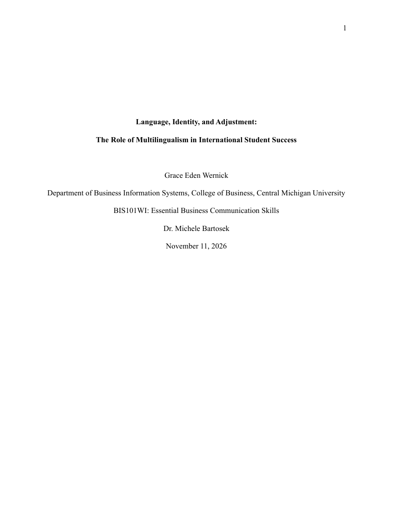

RESEARCH PAPER
100%
Project grade
Language, Identity, and Adjustment: The Role of Multilingualism in International Student Success
Central Michigan University
BIS101WI · November 2026
BIS101WI · November 2026
An investigation into the influence of multilingualism on international students' academic, social, and cultural experiences through literature review and original survey research.
View project ↗